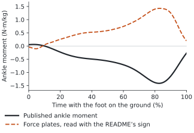
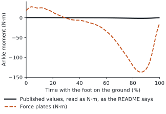
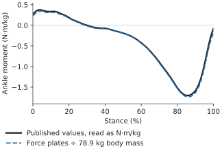

Compare phase plots
Compare datasets on the same axes. Start with joint angles, add signals, or separate the curves into aligned panels.
Original vs fixed: each verified problem in a source dataset, shown as published and as LocoHub reads or will release it. This section works without JavaScript.
Each curve gives subjects equal weight. Shading shows ±1 sample standard deviation between subject averages, not a confidence interval. Speeds and conditions are pooled within each task. These local summaries may differ from the downloads and are not quality scores.
Signals
Same vertical scale for every dataset within a signal. Ranges stay fixed when you toggle datasets or SD. Different signals keep their own units and scales.
Loading phase summaries…
Only matching signal columns and units are compared. Missing summaries do not mean the study did not record a task. Open a study’s phase plots to explore individual subjects; its earlier validation figures remain in the study notes.
Original vs fixed
10 problems found in source datasets or in LocoHub’s unreleased conversion code, each reproduced by a second, independent reviewer. Before shows the data as published (the original); After shows them as LocoHub reads or will release them. A finding with a single figure shows the published values and the check in one panel. Only clear errors are fixed (flipped signs, 180° offsets, wrong labels). Where the authors divided by the wrong body mass, LocoHub keeps the published values and documents the mismatch.
Most fixes are not in downloadable files yet. Each finding says where it stands. The curves above summarize the current local files, not these fixes.
Georgia Tech 2024: per-kg moments use body mass plus the exoskeleton, not body mass alone
Found · kept as published · no new GT24 release yet

All 25 participant folders and 2,421 recordings shown. What’s wrong, what it means, what LocoHub does and the evidence.
Georgia Tech 2024: the ankle sign is the opposite of what the README says
Documented · values unchanged · no new GT24 release yet


BT07, normal_walk_1_2_1-2_off, left leg: mean of 18 stances, one of 12 legs chosen at random (seed 20261031). What’s wrong, what it means, what LocoHub does and the evidence.
Georgia Tech 2023: running and skipping files are labelled as level walking
Relabel planned · values unchanged · not yet released

All 77 “normal walk” files from 12 recordings shown. What’s wrong, what it means, what LocoHub does and the evidence.
Georgia Tech 2023: the README says joint moments are in N·m, but they are per kg
Documented · corrected files not yet released


AB01, incline_walk_2, left leg, one stance; chosen at random (seed 20261031) from the 4 sampled legs of participants whose own body mass was used, so the units question is shown alone. What’s wrong, what it means, what LocoHub does and the evidence.
Georgia Tech 2023: per-kg moments were divided by another participant’s body mass
Correction decided · not yet run or released

All 12 participants shown. What’s wrong, what it means, what LocoHub does and the evidence.
UMich 2021: part of one right-ankle recording is off by 180°
Correction decided · not yet released


All strides of the right ankle in this recording; 29 of 31 inside strides kept. What’s wrong, what it means, what LocoHub does and the evidence.
UMich 2021: one recording’s pelvis was computed facing backwards
Correction decided · corrected files not yet released


Right side, frames 3512–3675: the stride the audit drew at random (seed 20261101); side drawn at random (seed 20261031). What’s wrong, what it means, what LocoHub does and the evidence.
UMich 2021: LocoHub’s unreleased rebuild gets thigh and shank angles wrong
Formula decided · not yet released


AB08 i5 right leg, frames 12709–12829: the stride the audit drew at random (seed 20261028). Pelvis tilt in this stride: median 19°. What’s wrong, what it means, what LocoHub does and the evidence.
UMich 2021: treadmill task timing is shifted in some recordings
Correction decided · not yet released

All 50 treadmill recordings shown. What’s wrong, what it means, what LocoHub does and the evidence.
UMich 2021: the AB01 5° incline recording is a copy of the 10° one
Recording left out of the release · not yet released

All 50 treadmill recordings shown. What’s wrong, what it means, what LocoHub does and the evidence.
Status as of 2 November 2026. The figures are the same files as on the broken vs fixed data page, drawn only from numbers saved in its linked audit records.